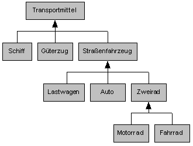

8.1 Konzepte objektorientierter Programmiersprachen
8.1.1 Einführung
Objektorientierte Programmierung (kurz OOP)
war das Programmierparadigma der 1990er Jahre. Viele der heute
verwendeten Programmiersprachen sind entweder von Grund auf objektorientiert
(Java, Eiffel, SmallTalk) oder wurden im Laufe der Zeit mit objektorientierten
Erweiterungen versehen (Basic, Pascal, ADA). Selbst manche Scriptsprachen
erlauben den Zugriff auf (mitunter vordefinierte) Objekte oder besitzen
objektorientierte Eigenschaften (JavaScript, Python). Die objektorientierte
Programmierung war eine der »Silver Bullets«, die die Software-Industrie
aus ihrer Krise führen und zu robusteren, fehlerärmeren
und besser wartbaren Programmen führen sollte.
Was sind nun die Geheimnisse der objektorientierten Programmierung?
Was verbirgt sich hinter dem Begriff und welches sind seine wichtigsten
Konzepte? Wir wollen uns zunächst mit den Grundideen objektorientierter
Programmierung auseinandersetzen und dann in diesem und den nächsten
Kapiteln Schritt für Schritt erläutern, wie sie in Java
umgesetzt wurden.
8.1.2 Abstraktion
Eine der wichtigsten Ideen der objektorientierten Programmierung ist
die Trennung zwischen Konzept und Umsetzung, etwa zwischen
einem Bauteil und seinem Bauplan, einer Speise
und dem für die Zubereitung erforderlichen Rezept oder
einem technischen Handbuch und der konkreten Apparatur,
die dadurch beschrieben wird. Diese Art von Unterscheidung ist in
der wirklichen Welt sehr bedeutsam. Wer weiß, wie man einen
einzigen Lichtschalter bedient, kann andere, gleichartige Schalter
ebenfalls bedienen. Wer ein Rezept für eine Sachertorte besitzt,
ist in der Lage, diese zu backen, selbst wenn er ansonsten über
keine Koch- oder Backkünste verfügt. Wer einen Führerschein
gemacht hat, kann ein Auto fahren, ohne im Detail über das komplizierte
Innenleben desselben unterrichtet zu sein.
In der objektorientierten Programmierung manifestiert sich diese Unterscheidung
in den Begriffen Objekt und Klasse. Ein Objekt ist ein
tatsächlich existierendes »Ding« aus der Anwendungswelt
des Programms. Es spielt dabei keine Rolle, ob es sich um die programmierte
Umsetzung eines konkret existierenden Gegenstands handelt oder ob
»nur« ein abstraktes Konzept modelliert wird. Eine »Klasse«
ist dagegen die Beschreibung eines oder mehrerer ähnlicher Objekte.
»Ähnlich« bedeutet dabei, dass eine Klasse nur Objekte
eines bestimmten Typs beschreibt. Diese müssen sich zwar nicht
in allen Details gleichen, aber doch in so vielen von ihnen übereinstimmen,
dass eine gemeinsame Beschreibung angebracht ist. Eine Klasse beschreibt
mindestens drei wichtige Dinge:
- Wie ist das Objekt zu bedienen?
- Welche Eigenschaften hat das Objekt und wie verhält es sich?
- Wie wird das Objekt hergestellt?
Ähnlich wie ein Rezept zur Herstellung von Hunderten von Sachertorten
verwendet werden kann, ermöglicht eine Klasse das Erzeugen einer
prinzipiell beliebigen Anzahl von Objekten. Jedes hat dabei seine
eigene Identität und mag sich in gewissen Details von allen anderen
unterscheiden. Letzlich ist das Objekt aber immer eine Instanz
der Klasse, nach der es modelliert wurde. In einem Haus kann es beispielsweise
fünfzig Lichtschalter-Objekte geben. Sie alle sind Instanzen
der Klasse »Lichtschalter«, lassen sich in vergleichbarer
Weise bedienen und sind identisch konstruiert. Dennoch unterscheiden
wir sehr wohl zwischen dem Lichtschalter-Objekt, das die Flurbeleuchtung
bedient, und jenem, das den Keller erhellt. Und beide wiederum unterscheiden
sich eindeutig von allen anderen Lichschalterinstanzen im Haus.
Diese Unterscheidung zwischen Objekten und Klassen kann als Abstraktion
angesehen werden. Sie bildet die erste wichtige Eigenschaft objektorientierter
Sprachen. Abstraktion hilft, Details zu ignorieren, und reduziert
damit die Komplexität des Problems. Die Fähigkeit zur Abstraktion
ist eine der wichtigsten Voraussetzungen zur Beherrschung komplexer
Apparate und Techniken und kann in ihrer Bedeutung nicht hoch genug
eingeschätzt werden.
8.1.3 Kapselung
In objektorientierten Programmiersprachen wird eine Klasse durch die
Zusammenfassung einer Menge von Daten und darauf operierender Funktionen
(die nun Methoden genannt werden) definiert.
Die Daten werden durch einen Satz Variablen repräsentiert, der
für jedes instanziierte Objekt neu angelegt wird (diese werden
als Attribute, Membervariablen,
Instanzvariablen oder Instanzmerkmale
bezeichnet). Die Methoden sind im ausführbaren Programmcode nur
einmal vorhanden, operieren aber bei jedem Aufruf auf den Daten eines
ganz bestimmten Objekts (das Laufzeitsystem übergibt bei jedem
Aufruf einer Methode einen Verweis auf den Satz Instanzvariablen,
mit dem die Methode gerade arbeiten soll).
Die Instanzvariablen repräsentieren den Zustand eines
Objekts. Sie können bei jeder Instanz einer Klasse unterschiedlich
sein und sich während seiner Lebensdauer verändern. Die
Methoden repräsentieren das Verhalten des Objekts. Sie
sind - von gewollten Ausnahmen abgesehen, bei denen Variablen bewusst
von außen zugänglich gemacht werden - die einzige Möglichkeit,
mit dem Objekt zu kommunizieren und so Informationen über seinen
Zustand zu gewinnen oder diesen zu verändern. Das Verhalten der
Objekte einer Klasse wird in seinen Methodendefinitionen festgelegt
und ist von dem darin enthaltenen Programmcode und dem aktuellen Zustand
des Objekts abhängig.
Diese Zusammenfassung von Methoden und Variablen zu Klassen bezeichnet
man als Kapselung. Sie stellt die zweite
wichtige Eigenschaft objektorientierter Programmiersprachen dar. Kapselung
hilft vor allem, die Komplexität der Bedienung eines Objekts
zu reduzieren. Um eine Lampe anzuschalten, muss man nicht viel über
den inneren Aufbau des Lichtschalters wissen. Sie vermindert aber
auch die Komplexität der Implementierung, denn undefinierte Interaktionen
mit anderen Bestandteilen des Programms werden verhindert oder reduziert.
8.1.4 Wiederverwendung
Durch die Abstraktion und Kapselung wird die Wiederverwendung
von Programmelementen gefördert, die dritte wichtige Eigenschaft
objektorientierter Programmiersprachen. Ein einfaches Beispiel dafür
sind Collections, also Objekte, die Sammlungen anderer Objekte
aufnehmen und auf eine bestimmte Art und Weise verarbeiten können.
Collections sind oft sehr kompliziert aufgebaut (typischerweise zur
Geschwindigkeitssteigerung oder Reduzierung des Speicherbedarfs),
besitzen aber in aller Regel eine einfache Schnittstelle. Werden sie
als Klasse implementiert und werden durch die Kapselung der Code-
und Datenstrukturen die komplexen Details »wegabstrahiert«,
können sie sehr einfach wiederverwendet werden. Immer, wenn im
Programm eine entsprechende Collection benötigt wird, muss lediglich
ein Objekt der passenden Klasse instanziert werden, und das Programm
kann über die einfach zu bedienende Schnittstelle darauf zugreifen.
Wiederverwendung ist ein wichtiger Schlüssel zur Erhöhung
der Effizienz und Fehlerfreiheit beim Programmieren.
8.1.5 Beziehungen
Objekte und Klassen existieren für gewöhnlich nicht völlig
alleine, sondern stehen in Beziehungen zueinander. So ähnelt
ein Fahrrad beispielsweise einem Motorrad, hat aber auch mit einem
Auto Gemeinsamkeiten. Ein Auto ähnelt dagegen einem Lastwagen.
Dieser kann einen Anhänger haben, auf dem ein Motorrad steht.
Ein Fährschiff ist ebenfalls ein Transportmittel und kann viele
Autos oder Lastwagen aufnehmen, genauso wie ein langer Güterzug.
Dieser wird von einer Lokomotive gezogen. Ein Lastwagen kann auch
einen Anhänger ziehen, muss es aber nicht. Bei einem Fährschiff
ist keine Zugmaschine erforderlich und es kann nicht nur Transportmittel
befördern, sondern auch Menschen, Tiere oder Lebensmittel.
Wir wollen ein wenig Licht in diese Beziehungen bringen und zeigen,
wie sie sich in objektorientierten Programmiersprachen auf wenige
Grundtypen reduzieren lassen:
- »is-a«-Beziehungen (Generalisierung, Spezialisierung)
- »part-of«-Beziehungen (Aggregation, Komposition)
- Verwendungs- oder Aufrufbeziehungen
Generalisierung und Spezialisierung
Zuerst wollen wir die »is-a«-Beziehung betrachten. »is-a«
bedeutet »ist ein« und meint die Beziehung zwischen »ähnlichen«
Klassen. Ein Fahrrad ist kein Motorrad, aber beide sind Zweiräder.
Ein Zweirad, und damit sowohl das Fahrrad als auch das Motorrad, ist
ein Straßenfahrzeug, ebenso wie das Auto und der Lastwagen.
All diese Klassen repräsentieren Transportmittel, zu denen aber
auch die Schiffe und Güterzüge zählen.
Die »is-a«-Beziehung zwischen zwei Klassen A und
B sagt aus, dass »B ein A ist«, also
alle Eigenschaften von A besitzt und vermutlich noch ein paar
mehr. B ist demnach eine Spezialisierung von A. Andersherum
betrachtet, ist A eine Generalisierung (Verallgemeinerung)
von B.
»is-a«-Beziehungen werden in objektorientierten Programmiersprachen
durch Vererbung ausgedrückt. Eine
Klasse wird dabei nicht komplett neu definiert, sondern von einer
anderen Klasse abgeleitet. In diesem Fall erbt sie alle Eigenschaften
dieser Klasse und kann nach Belieben eigene hinzufügen. In unserem
Fall wäre also B von A abgeleitet. A wird
als Basisklasse (manchmal auch als
Vaterklasse), B als abgeleitete
Klasse bezeichnet.
Vererbungen können mehrstufig sein, d.h., eine abgeleitete Klasse
kann Basisklasse für weitere Klassen sein. Auf diese Weise können
vielstufige Vererbungshierarchien entstehen, die in natürlicher
Weise die Taxonomie (also die gegliederte Begriffsstruktur) der zu
modellierenden Anwendungswelt repräsentieren. Vererbungshierarchien
werden wegen ihrer Baumstruktur auch als Ableitungsbäume
bezeichnet. Sie werden meist durch Graphen dargestellt, in denen die
abgeleiteten Klassen durch Pfeile mit den Basisklassen verbunden sind
und die Basisklassen oberhalb der abgeleiteten Klassen stehen. Für
unsere Fahrzeugwelt ergäbe sich beispielsweise folgender Ableitungsbaum:

Abbildung 8.1: Vererbungshierarchie für Transportmittel
Als Eigenschaften der Basisklasse Transportmittel könnten
etwa deren Anschaffungskosten, ihre Lebensdauer oder die Transportgeschwindigkeit
angesehen werden. Sie gelten für alle abgeleiteten Klassen. In
der zweiten Ableitungsebene unterscheiden wir nach der Art der Fortbewegung
(wir hätten allerdings ebensogut nach der Farbe, dem Verwendungszweck
oder einem beliebigen anderen Merkmal unterscheiden können).
In der Klasse Wasserfahrzeug könnten nun Eigenschaften
wie Verdrängung, Hochseetauglichkeit und erforderliche Besatzung
festgehalten werden. Das Fährschiff schließlich fügt
seine Transportkapazitäten für Autos, Lastwagen und Personen
hinzu, gibt die Anzahl der Kabinen der unterschiedlichen Kategorien
an und definiert, ob es im RORO-Verfahren be- und entladen werden
kann oder nicht.
Aggregation und Komposition
Der zweite Beziehungstyp, die »part-of«-Beziehungen, beschreibt
die Zusammensetzung eines Objekts aus anderen Objekten (dies
wird auch als Komposition bezeichnet).
So besteht beispielsweise der Güterzug aus einer (oder manchmal
zwei) Lokomotiven und einer großen Anzahl Güterzuganhänger.
Der Lastwagen besteht aus der LKW-Zugmaschine und eventuell einem
Anhänger. Ein Fahrrad besteht aus vielen Einzelteilen. Objektorientierte
Sprachen implementieren »part-of«-Beziehungen durch Instanzvariablen,
die Objekte aufnehmen können. Der Güterzug könnte also
eine (oder zwei) Instanzvariablen vom Typ Lokomotive und ein
Array von Instanzvariablen vom Typ Güterzuganhänger
besitzen.
»part-of«-Beziehungen müssen nicht zwangsläufig
beschreiben, woraus ein Objekt zusammengesetzt ist. Vielmehr
können sie auch den allgemeineren Fall des einfachen Aufnehmens
anderer Objekte beschreiben (was auch als Aggregation
bezeichnet wird). Zwischen dem Motorrad, das auf dem Lastwagenanhänger
steht, oder den Straßenfahrzeugen, die auf einem Fährschiff
untergebracht sind, besteht zwar eine »part-of«-Beziehung,
sie ist aber nicht essenziell für die Existenz des aufnehmenden
Objekts. Der Anhänger existiert auch, wenn kein Motorrad darauf
platziert ist. Und das Fährschiff kann auch leer von Kiel nach
Oslo fahren.
Während bei der objektorientierten Modellierung sorgsam zwischen
beiden Fällen unterschieden wird (Komposition bezeichnet die
strenge Form der Aggregation auf Grund einer existenziellen Abhängigkeit),
behandeln objektorientierte Programmiersprachen sie prinzipiell gleich.
In beiden Fällen gibt es Instanzvariablen, die Objekte aufnehmen
können. Ist ein optionales Objekt nicht vorhanden, wird dies
durch die Zuweisung eines speziellen null-Objekts
ausgedrückt. Für die semantischen Eigenschaften der Beziehung
ist die Klasse selbst verantwortlich.
Verwendungs- und Aufrufbeziehungen
Die dritte Art von Beziehungen zwischen Objekten oder Klassen hat
den allgemeinsten Charakter. Benutzt beispielsweise eine Methode während
ihrer Ausführung ein temporäres Objekt, so besteht zwischen
beiden eine Verwendungsbeziehung: Objekt x verwendet eine Instanz
der Klasse Y, um bestimmte Operationen auszuführen. Taucht
in der Argumentliste einer Methode eine Objektvariable der Klasse
T auf, so entsteht eine ähnliche Beziehung zu T.
Zwar ist dies keine »part-of«-Beziehung und auch die Ableitungsbeziehung
zwischen beiden Klassen spielt keine Rolle. Wenigstens muss aber die
Methode die Argumentklasse kennen und in der Lage sein, Methoden darauf
aufzurufen oder das Objekt an Dritte weiterzugeben.
Allgemeine Verwendungs- oder Aufrufbeziehungen finden in objektorientierten
Programmiersprachen ihren Niederschlag darin, dass Objekte als lokale
Variablen oder Methodenargumente verwendet werden. Sie werden auch
mit dem Begriff Assoziationen bezeichnet.
8.1.6 Polymorphismus
Als letztes wichtiges Konzept objektorientierter Programmiersprachen
wollen wir uns mit dem Polymorphismus
beschäftigen. Polymorphismus bedeutet direkt übersetzt etwa
»Vielgestaltigkeit« und bezeichnet zunächst einmal
die Fähigkeit von Objektvariablen, Objekte unterschiedlicher
Klassen aufzunehmen. Das geschieht allerdings nicht unkontrolliert,
sondern beschränkt sich für eine Objektvariable des Typs
X auf alle Objekte der Klasse X oder einer daraus abgeleiteten
Klasse.
Eine Objektvariable vom Typ Straßenfahrzeug kann also
nicht nur Objekte der Klasse Straßenfahrzeug aufnehmen,
sondern auch Objekte der Klassen Zweirad, Vierrad, Anhänger,
Motorrad, Fahrrad, Auto und Lastwagen.
Diese auf den ersten Blick erstaunliche Lässigkeit entspricht
allerdings genau dem gewohnten Umgang mit Vererbungsbeziehungen. Ein
Zweirad ist nunmal ein Straßenfahrzeug, hat alle
Eigenschaften eines Straßenfahrzeugs und kann daher durch eine
Variable repräsentiert werden, die auf ein Straßenfahrzeug
verweist. Dass es möglicherweise ein paar zusätzliche Eigenschaften
besitzt, stört den Compiler nicht. Er hat nur sicherzustellen,
dass die Eigenschaften eines Straßenfahrzeugs vollständig
vorhanden sind, denn mehr stellt er dem Programm beim Zugriff auf
eine Variable dieses Typs nicht zur Verfügung. Davon kann er
aber aufgrund der Vererbungshierarchie ausgehen.
Interessant wird Polymorphismus, wenn die Programmiersprache zusätzlich
das Konzept des Late Binding implementiert.
Im Unterschied zum »Early Binding« wird dabei nicht bereits
zur Compile-Zeit entschieden, welche Ausprägung einer bestimmten
Methode aufgerufen werden soll, sondern erst zur Laufzeit. Wenn beispielsweise
auf einem Objekt der Klasse X eine Methode mit dem Namen f
aufgerufen werden soll, ist zwar prinzipiell bereits zur Compile-Zeit
klar, wie der Name lautet. Objektorientierte Programmiersprachen erlauben
aber das Überlagern von Methoden
in abgeleiteten Klassen, und da - wie zuvor erwähnt - eine Objektvariable
des Typs X auch Objekte aus allen von X abgeleiteten
Klassen aufnehmen kann, könnte f in einer dieser nachgelagerten
Klassen überlagert worden sein. Welche konkrete Methode also
aufgerufen werden muss, kann damit erst zur Laufzeit entschieden werden.
Wir werden in Abschnitt 9.4
ein ausführliches Anwendungsbeispiel vorstellen.
Nun ist dieses Verhalten keinesfalls hinderlich oder unerwünscht,
sondern kann sehr elegant dazu genutzt werden, automatische typbasierte
Fallunterscheidungen vorzunehmen. Betrachten wir dazu noch einmal
unsere Hierarchie von Transportmitteln. Angenommen, unser Unternehmen
verfügt über einen breit gefächerten Fuhrpark von Transportmitteln
aus allen Teilen des Ableitungsbaums. Als Unternehmer interessieren
uns natürlich die Kosten jedes Transportmittels pro Monat und
wir würden dazu eine Methode getMonatsKosten in der Basisklasse
Transportmittel definieren. Ganz offensichtlich lässt
sich diese dort aber nicht implementieren, denn beispielsweise
die Berechnung der monatlichen Kosten unseres Fährschiffs gestaltet
sich ungleich schwieriger als die der drei Fahrräder, die auch
im Fahrzeugfundus sind.
Anstatt nun in aufwändigen Fallunterscheidungen für jedes
Objekt zu prüfen, von welchem Typ es ist, muss lediglich diese
Methode in jeder abgeleiteten Klasse implementiert werden. Besitzt
das Programm etwa ein Array von Transportmittel-Objekten, kann
dieses einfach durchlaufen und für jedes Element getMonatsKosten
aufgerufen werden. Das Laufzeitsystem kennt den jeweiligen konkreten
Typ und kann die korrekte Methode aufrufen (und das ist die aus der
eigenen Klasse, nicht die in Transportmittel definierte).
8.1.7 Fazit
Objektorientierte Programmierung erlaubt eine natürliche Modellierung
vieler Problemstellungen. Sie vermindert die Komplexität eines
Programms durch Abstraktion, Kapselung, definierte Schnittstellen
und Reduzierung von Querzugriffen. Sie stellt Hilfsmittel zur Darstellung
von Beziehungen zwischen Klassen und Objekten dar und sie erhöht
die Effizienz des Entwicklers durch Förderung der Wiederverwendung
von Programmcode. Wir werden in den nächsten Abschnitten zeigen,
wie die objektorientierte Programmierung sich in Java gestaltet.